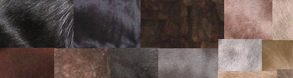
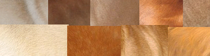
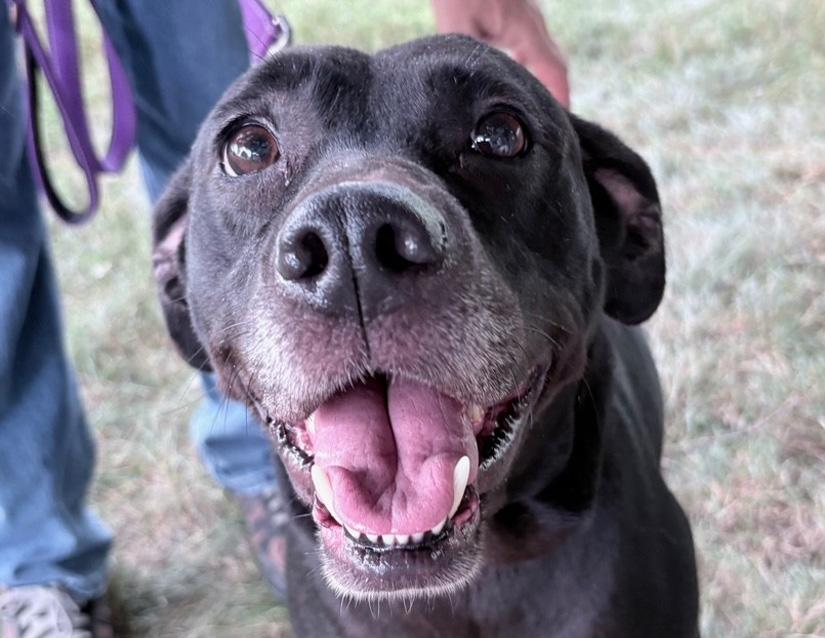
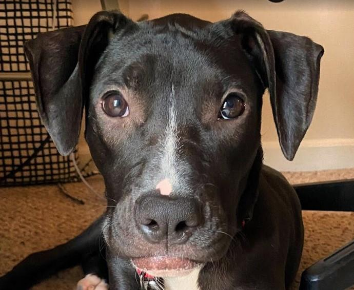
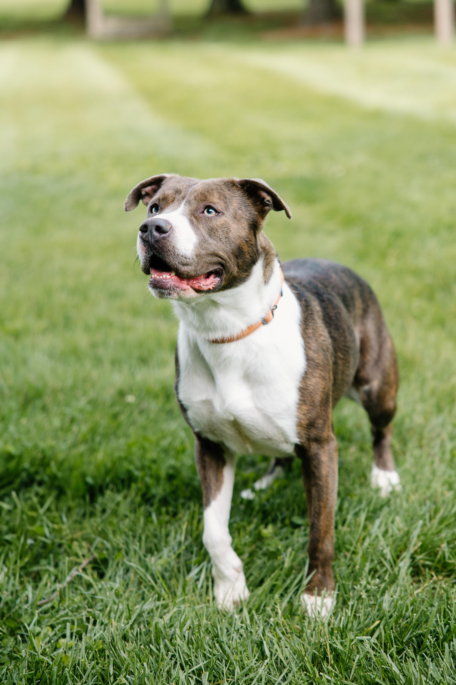
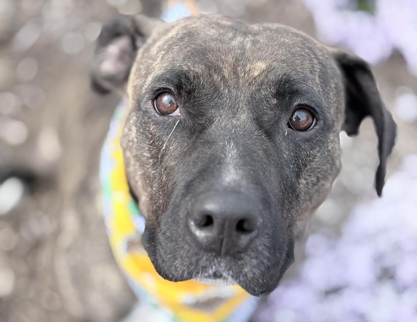
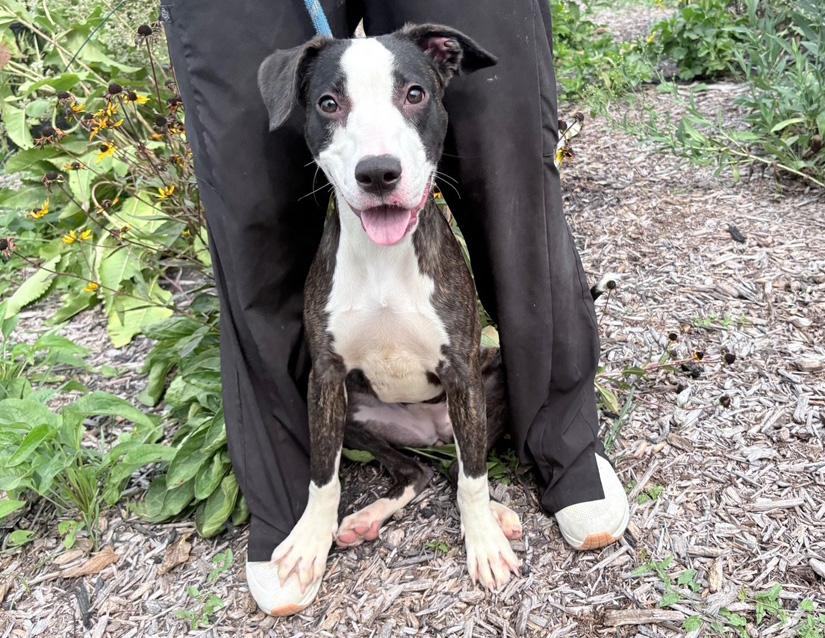
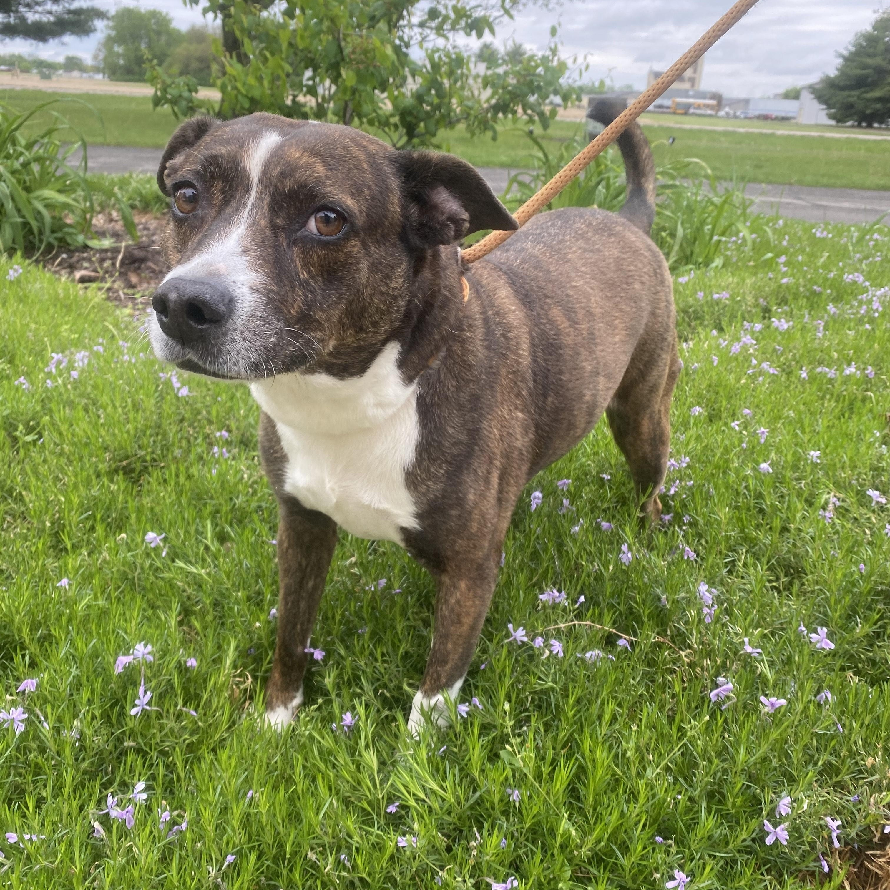
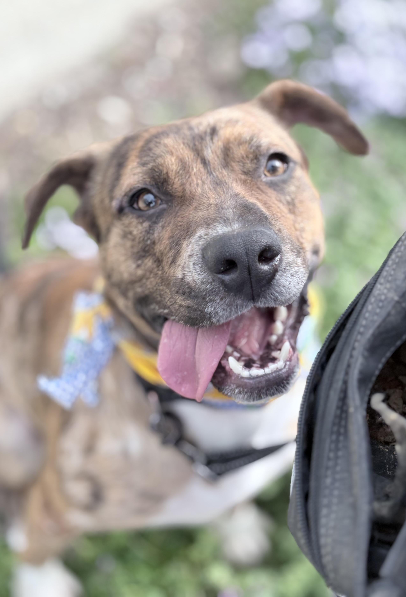

DEFB103, also known as the K locus, is a gene with mutations specific to dogs. There are two distinct patterns created by this.
This causes solid color dogs(no pattern, one color), ranging from black to light grayish brown. Those colors are called black based. These can come with or without white spots. This is different from recessive red that also causes solid color coats ranging from white to dark orange, called red based.
Black based
Red based
Black based pigment is created from Eumelanin, a type of melanin, which gives fur and skin their color. Red based pigment is created from Pheomelanin.
Fun fact: This is the gene that makes black wolves! This gene mutated in domesticated dogs and spread in the wolf population when those dogs bred back into the wild.
This is the most dominant variation on this gene, so if a dog had one copy of dominant black and one copy of brindle or non-solid, they would be black based.
Here are some examples of dominant black dogs:



Ok, there is a LOT that we don’t know about this gene. Brindle dogs have many stripes that alternate between black based and red based pigments.
Some brindle dogs have more darker stripes than lighter stripes, and vice versa. Holly is a good example of this! Her stripes are just barely visible on her back. She definitely has more black based stripes.
It’s very unclear what causes these dogs to have stripes or how this gene came to be. But they do make really pretty dogs!!
Here are some examples!
   Reference pictures courtesy of doggenetics.co.uk
Images of animals courtesy of Columbus Animal Care Servies and Kat Dunn Photography